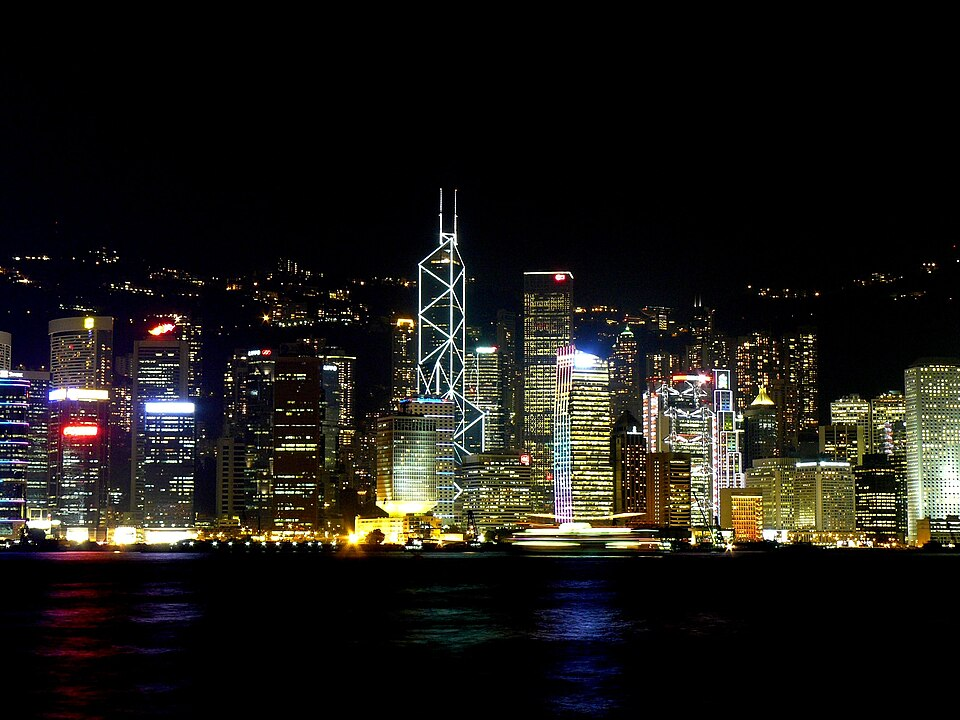

My favorite city is Hong Kong. I lived there from 2014 to 2019. Because the area is so small, the architecture is magnificent and full of skyscrapers. Most of the skyscrapers are set against the "peak"—the name of the mountain in the middle of Hong Kong island.

However, behind this facade of gorgeous buildings lies a simmering unrest as Hong Kong tries to integrate with mainland China. This has caused a lot of dissent. Furthermore, it is so expensive to live in Hong Kong that many young people live with their parents well into their 40s.